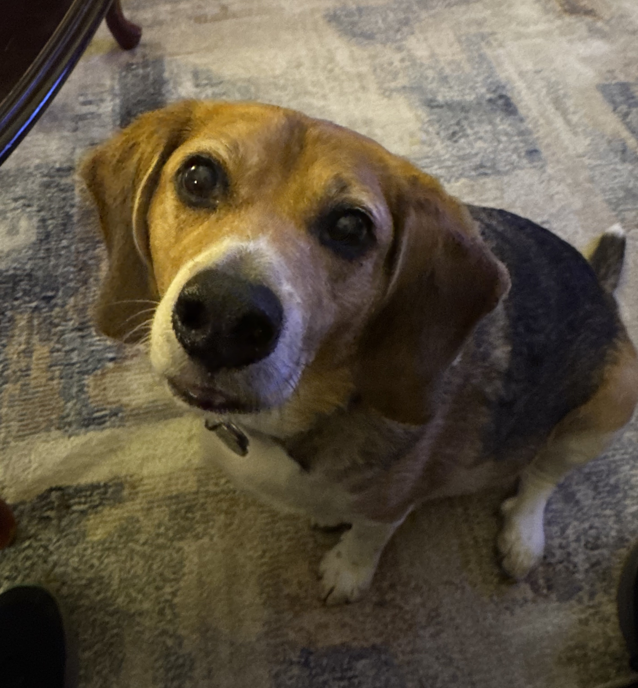
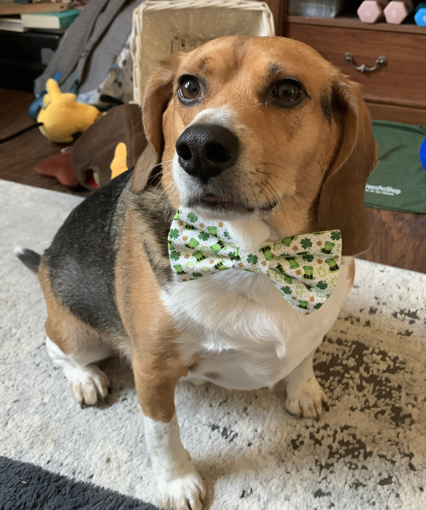
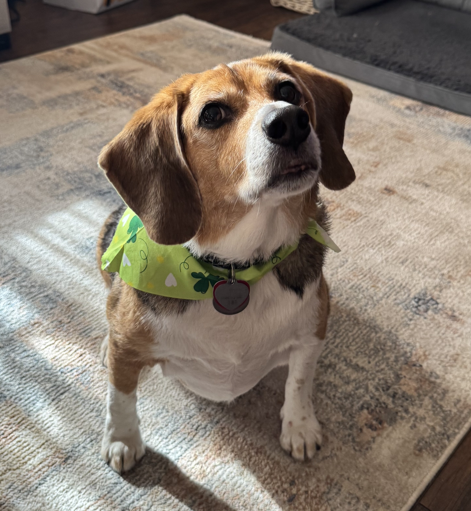

LIVE 11m ago
Dallas is featuring his March bowtie that is covered in clovers, Leprechaun hats, and other fun March symbols!
See more updates >

Dallas shares tips and tricks on how to perfect the art of “puppy dog eyes”.
5 min read

BREAKING NEWS
Dallas spotted today sporting a March themed bandanna after a trip to the Doggy Days Spa.
See more updates >

Has there been a decrease in treat receival? Dallas is investigating this issue on behalf of the neighborhood.
10 min read
You may be qualified to receive compensation.
Stay up-to-date on The Dallas Review to receive party details!
Sleeping, eating, walking, and more sleeping! Dallas shares a day in the life and gives advice on living your best doggy life!
© The Dallas Review 2026